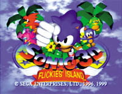

| Sonic 3D: Flickies' Island |
Sonic 3D for the Sega Saturn is finally here!
Sonic fans in Japan have been waiting a long time!
After being released in the US and Europe. Sonic 3D is finally ready to be delivered to people in Japan.
Oh, and it's being released at the same time as Sonic Adventure International on the Dreamcast!
Protect Flickies from Dr. Robotnik!
Chaos Emerald, a beautiful gem with mystical powers.
One day, Sonic, Tails, and Knuckles are visiting a mysterious island. Flicky Island is its name.
According to legend, the Chaos Emeralds lie dormant on this island.
The first thing Sonic and his friends decided to do was to look for a bird called Flicky, which was the clue to the gems.
But at the same time, a spy satellite hovers eerily in the sky, far away.
"I've finally found Flicky Island, home of the Chaos Emeralds!"
I've heard that dumb voice before... yes, it's the evil genius scientist, Dr. Robotnik!
Will Sonic be able to rescue Flicky and the others and find the Chaos Emeralds before Dr. Robotnik does?

Go to Sonic 3D screen shots!
| Presented By Sonic Team 1999 |